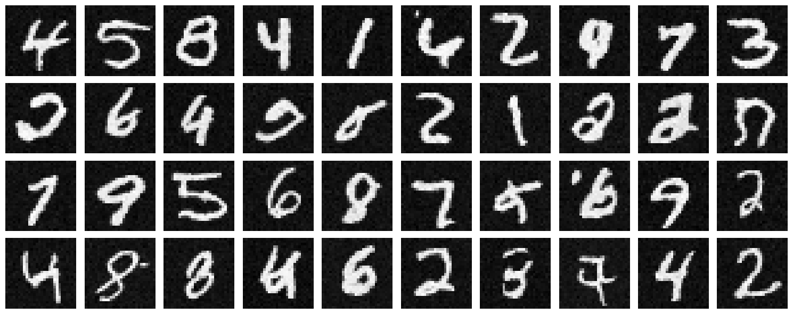

The algorithm used is exactly the same one as before for iterative denoising: except we now determine the alphas and betas ourselves
and don't have a trained model to start with. At a high level,
we choose a random image from the training set, random, and train the denoiser to
predict noise in \( x_t \). This ensures that we are able to train the model on both a diverse
dataset of images and timesteps parameter \( t\). We repeat this until the model converges and we are happy.
In order to apply time-conditioning into the UNet, we use the following architecture:
with the following new block for introducing parameter \( t\):
Training loss curve
Sampling after 5 epochs
For sampling, we use the following algorithm: once again, other than the choice of model
it is identical to the approach from part (a): we sample random noise and then denoise it
to generate a random digit.
Following are the results with this algorithm: notice that we have no control over which
digits are generated, and also only about half of them look like sensible digits. In the next part,
we will use class conditioning to improve results of sampling. Obviously, the results get better with more
and more epochs.
Sampling after 20 epochs

Bells and Whistles: Sampling Digits GIF for UNet with Time Conditioning
epoch=5
epoch=20
Class Conditioning
Overview
The idea here is similar to time conditioning, except we have added conditioning on class and use
Classifier-Free Guidance exactly as in part A. This leads to the following training algorithm:
The model architecture is exactly the same as before, but instead of \(x_{i+1} \gets x_i + \text{t_block}\)
in the model we perform \(x_{i+1} \gets \text{c_block}*x_i + \text{t_block}\) to incorporate time and class.
Training loss curve
Sampling after 5 epochs, all digits 4 times
Since we can now guide (via CFG) our noise to denoise towards a certain
class (label) of digit, generating/sampling digits from noise becomes a lot easier.
In fact, we can specify exactly how many instances of a certain digit we want, and the
model can give us that. This is exactly what is implemented below: here is sampling after 5 and
20 epochs.
Sampling after 20 epochs
Bells and Whistles: Sampling Digits GIF for UNet with Class Conditioning


 The model architecture is exactly the same as before, but instead of \(x_{i+1} \gets x_i + \text{t_block}\)
in the model we perform \(x_{i+1} \gets \text{c_block}*x_i + \text{t_block}\) to incorporate time and class.
The model architecture is exactly the same as before, but instead of \(x_{i+1} \gets x_i + \text{t_block}\)
in the model we perform \(x_{i+1} \gets \text{c_block}*x_i + \text{t_block}\) to incorporate time and class.